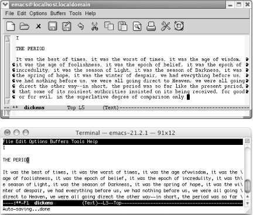
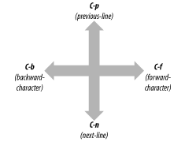
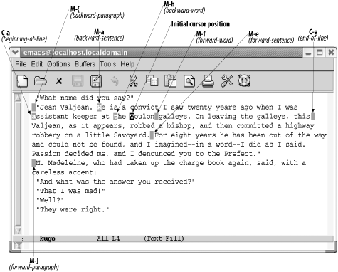
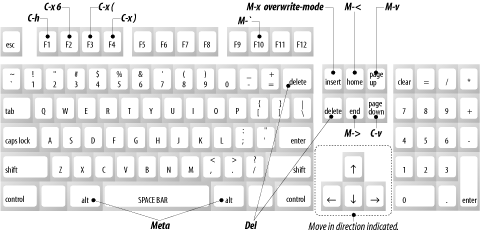

{% include JB/setup %}
{% raw %}
<div>
<div class="calibre24"></div><div class="book" xml:lang="en"><div class="book"><div class="book"><div class="book"><div class="calibre24"></div><h1 class="title"><a id="gnu3-CHP-2" class="calibre1"></a>Chapter 2. Editing</h1></div></div></div><p class="copyright">Now that you know how to enter and exit Emacs as well as the basics
of working with files, it's time to learn how to
move around in and edit files. Emacs offers lots of ways to move
around in files. At first, you might find it confusing that there are
so many ways to do the same thing. Be patient—as you learn, the
confusion will lessen, and you'll begin to
appreciate the
<a id="gnu3-CHP-2-ITERM-1655" class="calibre2"></a>variety
of Emacs commands. The more ways you learn, the fewer keystrokes
you'll need to get to the part of the file you want
to edit.</p><p class="copyright">If you want to practice commands while you're
reading—which will help you learn faster—start by typing
a page or two from anything you happen to have handy; the newspaper
is fine. That will give you some text to work with as you learn the
editing skills described in this chapter. Don't
worry if you make mistakes; just keep on typing. You can correct any
mistakes after you learn the basic editing skills outlined here.
Learning any editor is primarily a matter of forming certain finger
habits rather than memorizing what the book says. You will learn the
right finger habits only if you start typing.</p><p class="copyright">When you are typing and you get to the right side of the display, you
have two options. You can press <span><strong class="calibre5">Enter</strong></span> to go to the next line, or you can keep
typing. If you type a long line and don't press
<span><strong class="calibre5">Enter</strong></span>, Emacs waits until you reach
the end of the display. Then it puts a curved arrow at the end of the
line and one at the beginning of the next line as a visual indication
that the next line is a continuation of the previous line (see <a class="calibre2" href="ch02.html#gnu3-CHP-2-FIG-1" title="Figure 2-1. Graphical versions of Emacs use curved arrows to indicate that a line is continued; terminal versions use backslashes">Figure 2-1</a>). If Emacs is run in a nongraphical
environment, a backslash (\) is used instead.</p><div class="figure"><a id="gnu3-CHP-2-FIG-1" class="calibre2"></a><div class="figure-contents"><div class="mediaobject"><a id="I_2_tt29" class="calibre2"></a></div></div><p class="title3"><b class="calibre25">Figure 2-1. Graphical versions of Emacs use curved arrows to indicate that a line is continued; terminal versions use backslashes</b></p></div><br class="book"/><p class="copyright">Refill mode is a minor mode that <a id="gnu3-CHP-2-ITERM-1656" class="calibre2"></a>
         <a id="gnu3-CHP-2-ITERM-1657" class="calibre2"></a>
         <a id="gnu3-CHP-2-ITERM-1658" class="calibre2"></a>keeps
paragraphs neat as you edit them. It is not on by default. Look at
the mode line. If the word <code class="calibre21">Refill</code> appears, you are
in refill mode already. If not, you can turn it on for this buffer
only by typing <span><strong class="calibre5">M-x refill-mode
Enter</strong></span>. If you decide that you don't like
refill mode, type <span><strong class="calibre5">M-x refill-mode
Enter</strong></span> again. This command is like a light switch: it
toggles refill mode on and off.</p><p class="copyright">You may decide that you want to enter refill mode automatically
whenever you edit. We'll describe how to do so at
the end of this chapter.</p><p class="copyright">In some contexts, refill mode can be annoying, and it is still a work
in progress according to the Emacs manual. You
m<a id="gnu3-CHP-2-ITERM-1659" class="calibre2"></a>
         <a id="gnu3-CHP-2-ITERM-1660" class="calibre2"></a>ay
prefer auto-fill mode. You enter it in the same way; type <span><strong class="calibre5">M-x auto-fill-mode Enter</strong></span>. The word
<code class="calibre21">Fill</code> appears on the mode line.</p><p class="copyright">When you type paragraphs, auto-fill mode formats them. When you edit
them, however, auto-fill mode does not automatically reformat them.
You do that yourself using the <span><strong class="calibre5">fill-paragraph</strong></span> command, <span><strong class="calibre5">M-q</strong></span>.</p><p class="copyright">If you turn on refill mode and then decide to use auto-fill mode, you
still have to turn refill mode off explicitly by typing <span><strong class="calibre5">M-x refill-mode Enter</strong></span>. Otherwise, both modes
appear on the mode line, and refill mode continues its merry
automatic reformatting of paragraphs, ignoring the fact that
auto-fill mode has been enabled.</p><p class="copyright">Watch out for one important pitfall when reformatting paragraphs. In
text mode, a paragraph is any text that is indented or has a blank
line before and after it. If you have a file with no blank lines,
Emacs thinks it is all one long paragraph. Typing <span><strong class="calibre5">M-q</strong></span> takes all the text, ignoring line breaks,
and makes it one long paragraph. This command is a particular problem
if you have a data file, a program, or if you just prefer to write
files with no blank lines. Luckily, pressing <span><strong class="calibre5">C-_</strong></span> or <span><strong class="calibre5">C-x u</strong></span>
(both for <span><strong class="calibre5">undo</strong></span>) magically puts
things back the way they were. If you regularly create files with no
blank lines, here are some suggestions:</p><div class="book"><ul class="itemizedlist"><li class="listitem"><p class="copyright">Instead of writing <a id="gnu3-CHP-2-ITERM-1661" class="calibre2"></a>
               <a id="gnu3-CHP-2-ITERM-1662" class="calibre2"></a>in text mode, use paragraph indent
text mode. In this mode, a line that starts with any blank space is a
new paragraph. Type <span><strong class="calibre5">M-x
paragraph-indent-text-mode</strong></span> to start this mode;
you'll see <code class="calibre21">Parindent</code> on the mode
line. See <a class="calibre2" href="ch06.html" title="Chapter 6. Writing Macros">Chapter 6</a> for more details.</p></li><li class="listitem"><p class="copyright">Use a specific mode rather than text mode for writing. For example,
use HTML mode or LaTeX mode, described in <a class="calibre2" href="ch08.html" title="Chapter 8. Markup Language Support">Chapter 8</a>, for editing files of these types. These
special modes redefine what a paragraph means so that the <span><strong class="calibre5">fill-paragraph</strong></span> command works correctly.
Otherwise, these modes are very similar to text mode.</p></li><li class="listitem"><p class="copyright">Instead of filling a paragraph, fill
<a id="gnu3-CHP-2-ITERM-1663" class="calibre2"></a>a marked section of
text called a <span><em class="calibre7">region</em></span> (we'll
discuss regions later in this chapter). Define the region you want to
fill and press <span><strong class="calibre5">M-x fill-region
Enter</strong></span>. This command takes a region and formats each
individual paragraph within it.</p></li></ul></div><p class="copyright">
         <a class="calibre2" href="ch02.html#gnu3-CHP-2-TABLE-1" title="Table 2-1. Text filling and reformatting commands">Table 2-1</a> lists commands for filling text
automatically and reformatting paragraphs with auto-fill
<a id="gnu3-CHP-2-ITERM-1664" class="calibre2"></a>
         <a id="gnu3-CHP-2-ITERM-1665" class="calibre2"></a>
         <a id="gnu3-CHP-2-ITERM-1666" class="calibre2"></a>
         <a id="gnu3-CHP-2-ITERM-1667" class="calibre2"></a>mode.</p><div class="book"><a id="gnu3-CHP-2-TABLE-1" class="calibre2"></a><p class="title2"><b class="calibre25">Table 2-1. Text filling and reformatting commands</b></p><div class="table-contents"><table summary="Text filling and reformatting commands" class="calibre8"><colgroup class="calibre9"><col class="calibre10"/><col class="calibre10"/><col class="calibre10"/></colgroup><thead class="calibre11"><tr class="calibre12"><th class="calibre26">
                     <p class="copyright">Keystrokes</p>
                  </th><th class="calibre26">
                     <p class="copyright">Command name</p>
                  </th><th class="calibre27">
                     <p class="copyright">Action</p>
                  </th></tr></thead><tbody class="calibre15"><tr class="calibre12"><td class="calibre28">
                     <p class="copyright">(<span><em class="calibre7">none</em></span>) <sup class="calibre6">[<a id="gnu3-CHP-2-FNOTE-1" href="#ftn.gnu3-CHP-2-FNOTE-1" class="calibre2">1</a>]</sup>
                     </p>
                  </td><td class="calibre28">
                     <p class="copyright">
                        <span><strong class="calibre5">refill-mode</strong></span>
                     </p>
                  </td><td class="calibre29">
                     <p class="copyright">Toggle refill mode, in which Emacs automatically reformats text.</p>
                  </td></tr><tr class="calibre12"><td class="calibre28">
                     <p class="copyright">(<span><em class="calibre7">none</em></span>)<span><em class="calibre7">Options</em></span> 
                        <span>→</span>
                        <span><em class="calibre7">Word Wrap in Text Modes</em></span>
                     </p>
                  </td><td class="calibre28">
                     <p class="copyright">
                        <span><strong class="calibre5">auto-fill-mode</strong></span>
                     </p>
                  </td><td class="calibre29">
                     <p class="copyright">Toggle auto-fill mode, in which Emacs formats paragraphs as you type
them.</p>
                  </td></tr><tr class="calibre12"><td class="calibre28">
                     <p class="copyright">
                        <span><strong class="calibre5">M-q</strong></span>
                     </p>
                  </td><td class="calibre28">
                     <p class="copyright">
                        <span><strong class="calibre5">fill-paragraph</strong></span>
                     </p>
                  </td><td class="calibre29">
                     <p class="copyright">Reformat paragraph.</p>
                  </td></tr><tr class="calibre12"><td class="calibre30">
                     <p class="copyright">(<span><em class="calibre7">none</em></span>)<span><em class="calibre7">Edit</em></span> 
                        <span>→</span>
                        <span><em class="calibre7">Fill</em></span>
                     </p>
                  </td><td class="calibre30">
                     <p class="copyright">
                        <span><strong class="calibre5">fill-region</strong></span>
                     </p>
                  </td><td class="calibre31">
                     <p class="copyright">Reformat individual paragraphs within a region.</p>
                  </td></tr></tbody><tbody class="calibre15"><tr class="calibre12"><td colspan="3" class="calibre31"><div class="book"><p class="copyright"><sup class="calibre6">[<a id="ftn.gnu3-CHP-2-FNOTE-1" href="#gnu3-CHP-2-FNOTE-1" class="calibre2">1</a>] </sup>Remember that
<span><em class="calibre7">(none)</em></span> in the first column means that you type
<span><strong class="calibre5">M-x</strong></span> followed by the command name in
the second column, then press <span><strong class="calibre5">Enter</strong></span>
to run the command. There are no default keystrokes. To use the
<span><strong class="calibre5">refill-mode</strong></span> command, type <span><strong class="calibre5">M-x refill-mode Enter</strong></span>.</p></div></td></tr></tbody></table></div></div><br class="book"/><div class="book" xml:lang="en"><div class="book"><div class="book"><div class="book"><h1 class="title"><a id="gnu3-CHP-2-SECT-1" class="calibre1"></a>Moving the Cursor</h1></div></div></div><p class="copyright">The easiest way to move the cursor <a id="gnu3-CHP-2-ITERM-1668" class="calibre2"></a>
            <a id="gnu3-CHP-2-ITERM-1669" class="calibre2"></a>is to click the left button on
your mouse or to press the arrow keys. However, it's
a hassle to reach for a mouse all the time. Learn to use keyboard
commands to move around so that you will ultimately achieve blinding
speed and maximum productivity in Emacs.</p><p class="copyright">To use Emacs commands to move
<a id="gnu3-CHP-2-ITERM-1670" class="calibre2"></a>the cursor forward one space, type
<span><strong class="calibre5">C-f</strong></span> (<span><strong class="calibre5">f</strong></span> for
"forward"). As you might guess,
<span><strong class="calibre5">C-b</strong></span> moves the cursor backward. To
move up, type <span><strong class="calibre5">C-p</strong></span> (for <span><strong class="calibre5">previous-line</strong></span>), and to move down, type
<span><strong class="calibre5">C-n</strong></span> (for <span><strong class="calibre5">next-line</strong></span>). It's easier to
memorize commands if you remember what the letters stand for.</p><p class="copyright">
            <a class="calibre2" href="ch02.html#gnu3-CHP-2-FIG-2" title="Figure 2-2. Basic cursor motion">Figure 2-2</a> illustrates how to move up, down, left,
and right using Emacs commands.</p><div class="figure"><a id="gnu3-CHP-2-FIG-2" class="calibre2"></a><div class="figure-contents"><div class="mediaobject"><a id="I_2_tt30" class="calibre2"></a></div></div><p class="title3"><b class="calibre25">Figure 2-2. Basic cursor motion</b></p></div><br class="book"/><p class="copyright">If you're at the end of a line, <span><strong class="calibre5">C-f</strong></span> moves to the first character on the next
line. Likewise, if you're at the beginning of a
line, <span><strong class="calibre5">C-b</strong></span> moves to the last
character of the previous line. If there's no place
to go, Emacs beeps and displays the message <code class="calibre21">Beginning of
buffer</code> or <code class="calibre21">End of buffer</code>.</p><div class="book" xml:lang="en"><div class="book"><div class="book"><div class="book"><h2 class="title1"><a id="gnu3-CHP-2-SECT-1.1" class="calibre1"></a>Other Ways to Move the Cursor</h2></div></div></div><p class="copyright">Now we'll learn some more advanced ways to move the
cursor. One common way is moving forward and
<a id="gnu3-CHP-2-ITERM-1671" class="calibre2"></a>
               <a id="gnu3-CHP-2-ITERM-1672" class="calibre2"></a>
               <a id="gnu3-CHP-2-ITERM-1673" class="calibre2"></a>
               <a id="gnu3-CHP-2-ITERM-1674" class="calibre2"></a>
               <a id="gnu3-CHP-2-ITERM-1675" class="calibre2"></a>
               <a id="gnu3-CHP-2-ITERM-1676" class="calibre2"></a>backward by word: <span><strong class="calibre5">M-f</strong></span> moves <span><em class="calibre7">forward</em></span> a word;
<span><strong class="calibre5">M-b</strong></span> moves
<span><em class="calibre7">backward</em></span> a word. You can also move to the
beginning or end of the line. <span><strong class="calibre5">C-a</strong></span>
moves you to the beginning of the line (just like
<span><em class="calibre7">a</em></span> is the beginning of the alphabet). <span><strong class="calibre5">C-e</strong></span> moves you to the <span><em class="calibre7">end</em></span>
of the line. To move backward one sentence, type <span><strong class="calibre5">M-a</strong></span>; to move forward one sentence, type
<span><strong class="calibre5">M-e</strong></span>. To move forward a whole
paragraph at a time, type <span><strong class="calibre5">M-}</strong></span>; to
move backward a paragraph, type <span><strong class="calibre5">M-{</strong></span>.
If you're in the middle of a sentence or paragraph,
moving back a sentence or paragraph actually takes you to the
beginning of the current sentence or paragraph.</p><p class="copyright">
               <a class="calibre2" href="ch02.html#gnu3-CHP-2-FIG-3" title="Figure 2-3. Moving the cursor more than one character at a time">Figure 2-3</a> uses a few paragraphs of Victor
Hugo's <span><em class="calibre7">Les
Misérables</em></span> to show how you can move the cursor
more than one character at a time.</p><div class="figure"><a id="gnu3-CHP-2-FIG-3" class="calibre2"></a><div class="figure-contents"><div class="mediaobject"><a id="I_2_tt31" class="calibre2"></a></div></div><p class="title3"><b class="calibre25">Figure 2-3. Moving the cursor more than one character at a time</b></p></div><br class="book"/><p class="copyright">You may have picked up on a pattern here. Notice the difference
between commands starting <a id="gnu3-CHP-2-ITERM-1677" class="calibre2"></a>
               <a id="gnu3-CHP-2-ITERM-1678" class="calibre2"></a>
               <a id="gnu3-CHP-2-ITERM-1679" class="calibre2"></a>
               <a id="gnu3-CHP-2-ITERM-1680" class="calibre2"></a>with
<span><strong class="calibre5">Ctrl</strong></span> and those starting with
<span><strong class="calibre5">Meta</strong></span>. <span><strong class="calibre5">Ctrl</strong></span> commands generally move in smaller units
than their associated <span><strong class="calibre5">Meta</strong></span> commands.
For example, <span><strong class="calibre5">C-b</strong></span> moves the cursor
backward one character, whereas <span><strong class="calibre5">M-b</strong></span>
moves the cursor back one word. Likewise, <span><strong class="calibre5">C-a</strong></span> moves to the beginning of the line,
whereas <span><strong class="calibre5">M-a</strong></span> moves to the beginning
of a sentence.</p><p class="copyright">There's one caveat about moving
<a id="gnu3-CHP-2-ITERM-1681" class="calibre2"></a>by sentence or paragraph. Emacs
defines a sentence pretty strictly. You need <span><em class="calibre7">two</em></span>
spaces after the final punctuation mark, unless
you're at the end of the line. If
there's only one space, Emacs won't
recognize it. Similarly, moving backward and forward by paragraph
involves understanding the Emacs definition of a paragraph. To Emacs
(and to most of us), paragraphs are either indented with a tab or at
least one space or have blank lines between them (block style). You
can change these definitions, but first you have to understand how to
use regular expressions, which are discussed briefly in <a class="calibre2" href="ch03.html" title="Chapter 3. Search and Replace">Chapter 3</a> and in more depth in <a class="calibre2" href="ch11.html" title="Chapter 11. Emacs Lisp Programming">Chapter 11</a>. <a class="calibre2" href="ch10.html" title="Chapter 10. Customizing Emacs">Chapter 10</a> discusses
how to change variables.</p><p class="copyright">If your file has page breaks in it, you can move to the next page or
previous page by typing <span><strong class="calibre5">C-x ]</strong></span>
(<span><strong class="calibre5">forward-page</strong></span>) or <span><strong class="calibre5">C-x [</strong></span> (<span><strong class="calibre5">backward-page</strong></span>). Similar to paragraph and
sentence movement, moving by page involves the Emacs definition of
what a page is. A variable called <span><strong class="calibre5">page-delimiter</strong></span> defines what constitutes a page
break. If there are no Emacs-recognized page breaks in the file,
Emacs regards the buffer as one very long page. In this case, the
<span><strong class="calibre5">forward-page</strong></span> command takes you to
the end of the buffer, and the <span><strong class="calibre5">backward-page</strong></span> command takes you to the
beginning of the buffer.</p><p class="copyright">In text mode, a page break is a formfeed character that tells the
printer to move to the next page (to feed the next form or page
through the printer, hence the term <span><em class="calibre7">formfeed</em></span>)
before continuing to print. If you are in text mode and you want to
insert page breaks in your file, type <span><strong class="calibre5">C-q
C-l</strong></span> (the lowercase letter L). <span><strong class="calibre5">C-q</strong></span> is the <span><strong class="calibre5">quoted-insert</strong></span> command. It tells Emacs to put a
<span><strong class="calibre5">C-l</strong></span> control character in your file,
rather than interpreting <span><strong class="calibre5">C-l</strong></span> as the
<span><strong class="calibre5">recenter</strong></span> command. A <span><strong class="calibre5">C-l</strong></span> character looks like two characters (^L),
but it's really only one. (Try to erase one using
<span><strong class="calibre5">Del</strong></span> and see what we mean.)</p></div><div class="book" xml:lang="en"><div class="book"><div class="book"><div class="book"><h2 class="title1"><a id="gnu3-CHP-2-SECT-1.2" class="calibre1"></a>Moving a Screen (or More) at a Time</h2></div></div></div><p class="copyright">Like other graphical <a id="gnu3-CHP-2-ITERM-1682" class="calibre2"></a>
               <a id="gnu3-CHP-2-ITERM-1683" class="calibre2"></a>applications, you can use the scrollbar
to move around in Emacs. Like most things in Emacs, in addition to
using the mouse or scrollbar to move around, you should learn
Emacs's own keyboard commands to maximize your
productivity.</p><p class="copyright">If you want to page through a file one screen at a time, use the
<span><strong class="calibre5">PgDown</strong></span> key or type <span><strong class="calibre5">C-v</strong></span>. Emacs displays the next full screen from
your file. It leaves a couple of lines from the previous screen at
the top to give you a sense of context. Likewise, pressing <span><strong class="calibre5">M-v</strong></span> (or the <span><strong class="calibre5">PgUp</strong></span> key) shows you the previous screen.
Together, <span><strong class="calibre5">M-v</strong></span> and <span><strong class="calibre5">C-v</strong></span> provide a convenient way to scroll through
a file quickly.</p><p class="copyright">Scrolling happens <a id="gnu3-CHP-2-ITERM-1684" class="calibre2"></a>
               <a id="gnu3-CHP-2-ITERM-1685" class="calibre2"></a>automatically
if you type any motion command that takes you beyond the limits of
the text currently displayed. For example, if you are on the last
line of the screen and press <span><strong class="calibre5">C-n</strong></span>,
Emacs scrolls forward. Similarly, if you are at the top of the screen
and press <span><strong class="calibre5">C-p</strong></span>, Emacs scrolls
backward.</p><p class="copyright">You often want to move all <a id="gnu3-CHP-2-ITERM-1686" class="calibre2"></a>the
way to the beginning or the end of a file. Type <span><strong class="calibre5">M-&gt;</strong></span> or press <span><strong class="calibre5">End</strong></span> to go to the end of a buffer. To go to the
beginning, type <span><strong class="calibre5">M-&lt;</strong></span> or press
<span><strong class="calibre5">Home</strong></span>. It may help you to remember
that &gt; points to the end of the buffer, and &lt; points to the
beginning of the buffer.</p><p class="copyright">There are two more ways to move around that may come in handy.
<span><strong class="calibre5">M-x goto-line Enter</strong></span>
               <span><em class="calibre7">n</em></span>
               <span><strong class="calibre5">Enter</strong></span> moves the cursor to line <span><em class="calibre7">n</em></span> of
the file. Of course, Emacs starts counting lines from the beginning
of the file. Likewise, <span><strong class="calibre5">M-x goto-char Enter</strong></span>
               <span><em class="calibre7">n</em></span> 
               <span><strong class="calibre5">Enter</strong></span> goes to the <span><em class="calibre7">n</em></span>th
character of the file, counting from the beginning. In both cases,
<span><em class="calibre7">n</em></span> is a number.</p><p class="copyright">For programmers, these commands are useful because many compilers
give error messages like <code class="calibre21">Syntax error on line 356</code>.
By using these commands, you can move easily to the location of your
error. There are some more sophisticated ways to link Emacs with
error reports from compilers and other programs. In addition, several
other cursor motion commands are applicable only when you are editing
programs (see <a class="calibre2" href="ch09.html" title="Chapter 9. Computer Language Support">Chapter 9</a> for details).</p></div><div class="book" xml:lang="en"><div class="book"><div class="book"><div class="book"><h2 class="title1"><a id="gnu3-CHP-2-SECT-1.3" class="calibre1"></a>Repeating Commands</h2></div></div></div><p class="copyright">Now let's learn some efficiency
<a id="gnu3-CHP-2-ITERM-1687" class="calibre2"></a>
               <a id="gnu3-CHP-2-ITERM-1688" class="calibre2"></a>tricks.
Emacs lets you repeat any command as many times as you want to.
First, you can repeat a command any number of times by pressing
<span><strong class="calibre5">M-</strong></span>
               <span><em class="calibre7">n</em></span> before the
command, where <span><em class="calibre7">n</em></span> is the number of times you want
to repeat it. This command is called
<a id="gnu3-CHP-2-ITERM-1689" class="calibre2"></a>
               <a id="gnu3-CHP-2-ITERM-1690" class="calibre2"></a>the
<span><strong class="calibre5">digit-argument</strong></span> command.</p><p class="copyright">You can give <span><strong class="calibre5">M-</strong></span>
               <span><em class="calibre7">n</em></span> a large argument if
you want it to repeat the command many times. For example,
let's say you are editing a large file of 1000
lines. If you typed <span><strong class="calibre5">M-500 C-n</strong></span>, the
cursor would move down 500 lines, to the halfway point in the file.
If you give <span><strong class="calibre5">M-</strong></span>
               <span><em class="calibre7">n</em></span>
a larger argument than it can execute, it repeats the command as many
times as possible and then stops.</p><p class="copyright">There's another multiplier command you can use, too:
<span><strong class="calibre5">C-u</strong></span> (the <span><strong class="calibre5">universal-argument</strong></span> command). You can give
<span><strong class="calibre5">C-u</strong></span> an argument just like you do
<span><strong class="calibre5">M-</strong></span>
               <span><em class="calibre7">n</em></span>. Typing
either <span><strong class="calibre5">M-5</strong></span> or <span><strong class="calibre5">C-u 5</strong></span> repeats the command that follows five
times. But unlike <span><strong class="calibre5">M-</strong></span>
               <span><em class="calibre7">n</em></span>, <span><strong class="calibre5">C-u</strong></span> doesn't need an argument
to repeat commands. With no argument, <span><strong class="calibre5">C-u</strong></span> executes the next command four times. If
you type <span><strong class="calibre5">C-u C-u</strong></span>, it executes the
command 16 times. In this way, you can stack up <span><strong class="calibre5">C-u</strong></span>'s to make commands
execute many times: 16, 64, 256, and so on.<sup class="calibre6">[<a id="gnu3-CHP-2-FNOTE-2" href="#ftn.gnu3-CHP-2-FNOTE-2" class="calibre2">2</a>]</sup>
            </p></div><div class="book" xml:lang="en"><div class="book"><div class="book"><div class="book"><h2 class="title1"><a id="gnu3-CHP-2-SECT-1.4" class="calibre1"></a>Centering the Display</h2></div></div></div><p class="copyright">
               <span><strong class="calibre5">C-l</strong></span>, the <span><strong class="calibre5">recenter</strong></span> command, puts
<a id="gnu3-CHP-2-ITERM-1691" class="calibre2"></a>
               <a id="gnu3-CHP-2-ITERM-1692" class="calibre2"></a>the
current line in the center of the window vertically. This feature is
useful if you're typing at the bottom or the top of
the display. Typing <span><strong class="calibre5">C-l</strong></span> quickly
moves the material that you care about to the middle of the display,
where it is easier to see the full context.</p><p class="copyright">
               <span><strong class="calibre5">C-l</strong></span> also redraws the display, if for
any reason it appears obscured or contains random characters. This
doesn't happen as often as it used to when we used
terminals, but it can be a handy thing to know about, especially if
you find yourself using Emacs remotely in a terminal interface.</p><p class="copyright">
               <a class="calibre2" href="ch02.html#gnu3-CHP-2-TABLE-2" title="Table 2-2. Cursor movement commands">Table 2-2</a> lists cursor
<a id="gnu3-CHP-2-ITERM-1693" class="calibre2"></a>
               <a id="gnu3-CHP-2-ITERM-1694" class="calibre2"></a>movement
commands. If the command is mnemonic, the word to remember is given
in <span><em class="calibre7">italics</em></span>.</p><div class="book"><a id="gnu3-CHP-2-TABLE-2" class="calibre2"></a><p class="title2"><b class="calibre25">Table 2-2. Cursor movement commands</b></p><div class="table-contents"><table summary="Cursor movement commands" class="calibre8"><colgroup class="calibre9"><col class="calibre10"/><col class="calibre10"/><col class="calibre10"/></colgroup><thead class="calibre11"><tr class="calibre12"><th class="calibre26">
                           <p class="copyright">Keystrokes</p>
                        </th><th class="calibre26">
                           <p class="copyright">Command name</p>
                        </th><th class="calibre27">
                           <p class="copyright">Action</p>
                        </th></tr></thead><tbody class="calibre15"><tr class="calibre12"><td class="calibre28">
                           <p class="copyright">
                              <span><strong class="calibre5">C-f</strong></span>
                           </p>
                        </td><td class="calibre28">
                           <p class="copyright">
                              <span><strong class="calibre5">forward-char</strong></span>
                           </p>
                        </td><td class="calibre29">
                           <p class="copyright">Move <span><em class="calibre7">forward</em></span> one character (right).</p>
                        </td></tr><tr class="calibre12"><td class="calibre28">
                           <p class="copyright">
                              <span><strong class="calibre5">C-b</strong></span>
                           </p>
                        </td><td class="calibre28">
                           <p class="copyright">
                              <span><strong class="calibre5">backward-char</strong></span>
                           </p>
                        </td><td class="calibre29">
                           <p class="copyright">Move <span><em class="calibre7">backward</em></span> one character (left).</p>
                        </td></tr><tr class="calibre12"><td class="calibre28">
                           <p class="copyright">
                              <span><strong class="calibre5">C-p</strong></span>
                           </p>
                        </td><td class="calibre28">
                           <p class="copyright">
                              <span><strong class="calibre5">previous-line</strong></span>
                           </p>
                        </td><td class="calibre29">
                           <p class="copyright">Move to <span><em class="calibre7">previous</em></span> line (up).</p>
                        </td></tr><tr class="calibre12"><td class="calibre28">
                           <p class="copyright">
                              <span><strong class="calibre5">C-n</strong></span>
                           </p>
                        </td><td class="calibre28">
                           <p class="copyright">
                              <span><strong class="calibre5">next-line</strong></span>
                           </p>
                        </td><td class="calibre29">
                           <p class="copyright">Move to <span><em class="calibre7">next</em></span> line (down).</p>
                        </td></tr><tr class="calibre12"><td class="calibre28">
                           <p class="copyright">
                              <span><strong class="calibre5">M-f</strong></span>
                           </p>
                        </td><td class="calibre28">
                           <p class="copyright">
                              <span><strong class="calibre5">forward-word</strong></span>
                           </p>
                        </td><td class="calibre29">
                           <p class="copyright">Move one word <span><em class="calibre7">forward</em></span>.</p>
                        </td></tr><tr class="calibre12"><td class="calibre28">
                           <p class="copyright">
                              <span><strong class="calibre5">M-b</strong></span>
                           </p>
                        </td><td class="calibre28">
                           <p class="copyright">
                              <span><strong class="calibre5">backward-word</strong></span>
                           </p>
                        </td><td class="calibre29">
                           <p class="copyright">Move one word <span><em class="calibre7">backward</em></span>.</p>
                        </td></tr><tr class="calibre12"><td class="calibre28">
                           <p class="copyright">
                              <span><strong class="calibre5">C-a</strong></span>
                           </p>
                        </td><td class="calibre28">
                           <p class="copyright">
                              <span><strong class="calibre5">beginning-of-line</strong></span>
                           </p>
                        </td><td class="calibre29">
                           <p class="copyright">Move to <span><em class="calibre7">beginning</em></span> of line.</p>
                        </td></tr><tr class="calibre12"><td class="calibre28">
                           <p class="copyright">
                              <span><strong class="calibre5">C-e</strong></span>
                           </p>
                        </td><td class="calibre28">
                           <p class="copyright">
                              <span><strong class="calibre5">end-of-line</strong></span>
                           </p>
                        </td><td class="calibre29">
                           <p class="copyright">Move to <span><em class="calibre7">end</em></span> of line.</p>
                        </td></tr><tr class="calibre12"><td class="calibre28">
                           <p class="copyright">
                              <span><strong class="calibre5">M-e</strong></span>
                           </p>
                        </td><td class="calibre28">
                           <p class="copyright">
                              <span><strong class="calibre5">forward-sentence</strong></span>
                           </p>
                        </td><td class="calibre29">
                           <p class="copyright">Move forward one sentence.</p>
                        </td></tr><tr class="calibre12"><td class="calibre28">
                           <p class="copyright">
                              <span><strong class="calibre5">M-a</strong></span>
                           </p>
                        </td><td class="calibre28">
                           <p class="copyright">
                              <span><strong class="calibre5">backward-sentence</strong></span>
                           </p>
                        </td><td class="calibre29">
                           <p class="copyright">Move backward one sentence.</p>
                        </td></tr><tr class="calibre12"><td class="calibre28">
                           <p class="copyright">
                              <span><strong class="calibre5">M-}</strong></span>
                           </p>
                        </td><td class="calibre28">
                           <p class="copyright">
                              <span><strong class="calibre5">forward-paragraph</strong></span>
                           </p>
                        </td><td class="calibre29">
                           <p class="copyright">Move forward one paragraph.</p>
                        </td></tr><tr class="calibre12"><td class="calibre28">
                           <p class="copyright">
                              <span><strong class="calibre5">M-{</strong></span>
                           </p>
                        </td><td class="calibre28">
                           <p class="copyright">
                              <span><strong class="calibre5">backward-paragraph</strong></span>
                           </p>
                        </td><td class="calibre29">
                           <p class="copyright">Move backward one paragraph.</p>
                        </td></tr><tr class="calibre12"><td class="calibre28">
                           <p class="copyright">
                              <span><strong class="calibre5">C-v</strong></span>
                           </p>
                        </td><td class="calibre28">
                           <p class="copyright">
                              <span><strong class="calibre5">scroll-up</strong></span>
                           </p>
                        </td><td class="calibre29">
                           <p class="copyright">Move forward one screen.</p>
                        </td></tr><tr class="calibre12"><td class="calibre28">
                           <p class="copyright">
                              <span><strong class="calibre5">M-v</strong></span>
                           </p>
                        </td><td class="calibre28">
                           <p class="copyright">
                              <span><strong class="calibre5">scroll-down</strong></span>
                           </p>
                        </td><td class="calibre29">
                           <p class="copyright">Move backward one screen.</p>
                        </td></tr><tr class="calibre12"><td class="calibre28">
                           <p class="copyright">
                              <span><strong class="calibre5">C-x ]</strong></span>
                           </p>
                        </td><td class="calibre28">
                           <p class="copyright">
                              <span><strong class="calibre5">forward-page</strong></span>
                           </p>
                        </td><td class="calibre29">
                           <p class="copyright">Move forward one page.</p>
                        </td></tr><tr class="calibre12"><td class="calibre28">
                           <p class="copyright">
                              <span><strong class="calibre5">C-x [</strong></span>
                           </p>
                        </td><td class="calibre28">
                           <p class="copyright">
                              <span><strong class="calibre5">backward-page</strong></span>
                           </p>
                        </td><td class="calibre29">
                           <p class="copyright">Move backward one page.</p>
                        </td></tr><tr class="calibre12"><td class="calibre28">
                           <p class="copyright">
                              <span><strong class="calibre5">M-&lt;</strong></span>
                           </p>
                        </td><td class="calibre28">
                           <p class="copyright">
                              <span><strong class="calibre5">beginning-of-buffer</strong></span>
                           </p>
                        </td><td class="calibre29">
                           <p class="copyright">Move to beginning of file.</p>
                        </td></tr><tr class="calibre12"><td class="calibre28">
                           <p class="copyright">
                              <span><strong class="calibre5">M-&gt;</strong></span>
                           </p>
                        </td><td class="calibre28">
                           <p class="copyright">
                              <span><strong class="calibre5">end-of-buffer</strong></span>
                           </p>
                        </td><td class="calibre29">
                           <p class="copyright">Move to end of file.</p>
                        </td></tr><tr class="calibre12"><td class="calibre28">
                           <p class="copyright">(<span><em class="calibre7">none</em></span>)</p>
                        </td><td class="calibre28">
                           <p class="copyright">
                              <span><strong class="calibre5">goto-line</strong></span>
                           </p>
                        </td><td class="calibre29">
                           <p class="copyright">Go to line <span><em class="calibre7">n</em></span> of file.</p>
                        </td></tr><tr class="calibre12"><td class="calibre28">
                           <p class="copyright">(<span><em class="calibre7">none</em></span>)</p>
                        </td><td class="calibre28">
                           <p class="copyright">
                              <span><strong class="calibre5">goto-char</strong></span>
                           </p>
                        </td><td class="calibre29">
                           <p class="copyright">Go to character <span><em class="calibre7">n</em></span> of file.</p>
                        </td></tr><tr class="calibre12"><td class="calibre28">
                           <p class="copyright">
                              <span><strong class="calibre5">C-l</strong></span>
                           </p>
                        </td><td class="calibre28">
                           <p class="copyright">
                              <span><strong class="calibre5">recenter</strong></span>
                           </p>
                        </td><td class="calibre29">
                           <p class="copyright">Redraw screen with current line in the center.</p>
                        </td></tr><tr class="calibre12"><td class="calibre28">
                           <p class="copyright">
                              <span><strong class="calibre5">M-</strong></span>
                              <span><em class="calibre7">n</em></span>
                           </p>
                        </td><td class="calibre28">
                           <p class="copyright">
                              <span><strong class="calibre5">digit-argument</strong></span>
                           </p>
                        </td><td class="calibre29">
                           <p class="copyright">Repeat the next command <span><em class="calibre7">n</em></span> times.</p>
                        </td></tr><tr class="calibre12"><td class="calibre30">
                           <p class="copyright">
                              <span><strong class="calibre5">C-u</strong></span> 
                              <span><em class="calibre7">n</em></span>
                           </p>
                        </td><td class="calibre30">
                           <p class="copyright">
                              <span><strong class="calibre5">universal-argument</strong></span>
                           </p>
                        </td><td class="calibre31">
                           <p class="copyright">Repeat the next command <span><em class="calibre7">n</em></span> times (four times if
you omit <span><em class="calibre7">n</em></span>).</p>
                        </td></tr></tbody></table></div></div><br class="book"/></div><div class="book" xml:lang="en"><div class="book"><div class="book"><div class="book"><h2 class="title1"><a id="gnu3-CHP-2-SECT-1.5" class="calibre1"></a>Emacs Commands and Your Keyboard</h2></div></div></div><p class="copyright">You can access many Emacs
<a id="gnu3-CHP-2-ITERM-1695" class="calibre2"></a>
               <a id="gnu3-CHP-2-ITERM-1696" class="calibre2"></a>commands by pressing standard keys on
your keyboard, such as <span><strong class="calibre5">PageDown</strong></span> (to
scroll down one screen) or <span><strong class="calibre5">Home</strong></span> (to
go to the beginning of a buffer). <a class="calibre2" href="ch02.html#gnu3-CHP-2-FIG-4" title="Figure 2-4. Emacs commands and your keyboard">Figure 2-4</a> shows
a sample keyboard layout and what the keys do. Your keys may be in a
slightly different place, but if you have a key with the same or a
similar name, it should work. We say
"should" because there are
situations in which the keys won't work—for
example, if you use Emacs on a remote machine. We recommend that you
also learn the standard Emacs commands; they work on any keyboard,
and they are often easier to reach once you learn them.</p><div class="figure"><a id="gnu3-CHP-2-FIG-4" class="calibre2"></a><div class="figure-contents"><div class="mediaobject"><a id="I_2_tt32" class="calibre2"></a></div></div><p class="title3"><b class="calibre25">Figure 2-4. Emacs commands and your keyboard</b></p></div><br class="book"/></div></div><div class="book"><br class="book"/><hr class="calibre4"/><div class="book"><p class="copyright"><sup class="calibre6">[<a id="ftn.gnu3-CHP-2-FNOTE-2" href="#gnu3-CHP-2-FNOTE-2" class="calibre2">2</a>] </sup>Most
often, you'll use <span><strong class="calibre5">C-u</strong></span> as we've described here.
However, it doesn't always work as a multiplier;
sometimes <span><strong class="calibre5">C-u</strong></span> modifies the
command's function. Later in this chapter,
you'll see one such case. However, if
you're doing something where a multiplier makes
sense, <span><strong class="calibre5">C-u</strong></span> is almost certain to
work.</p></div></div></div></div>

{% endraw %}

